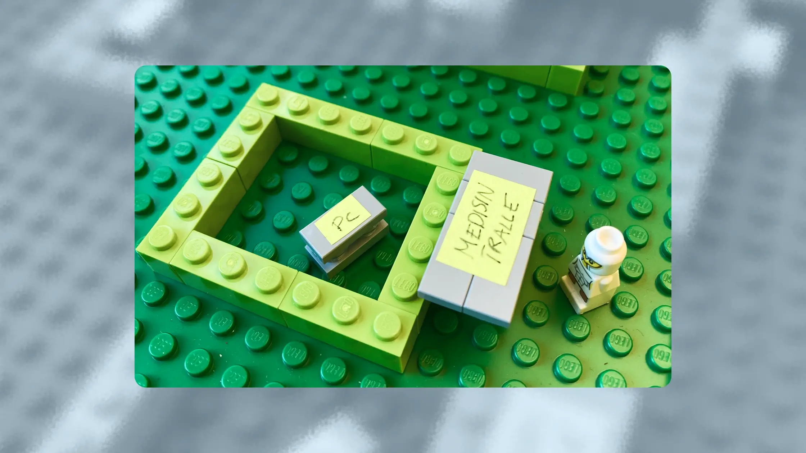
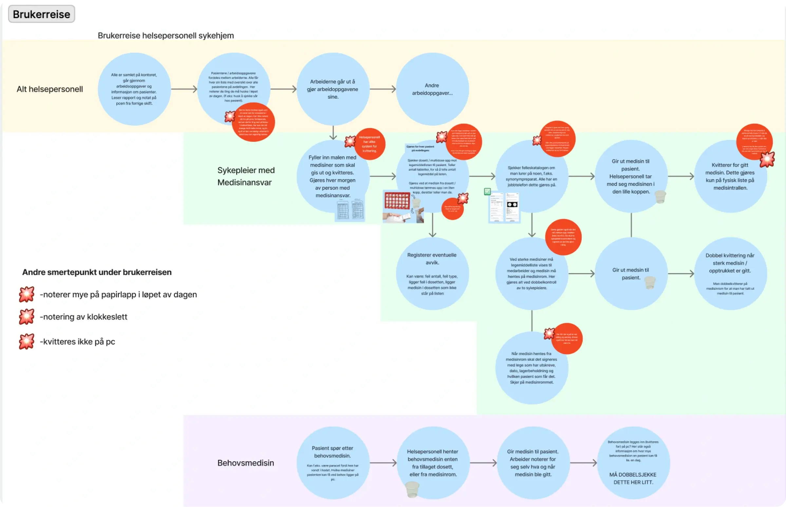
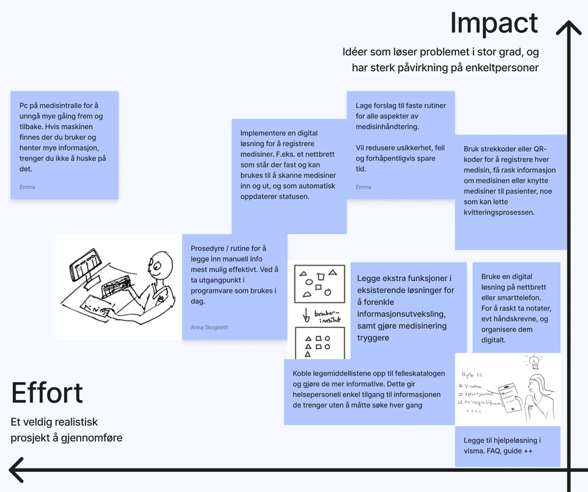
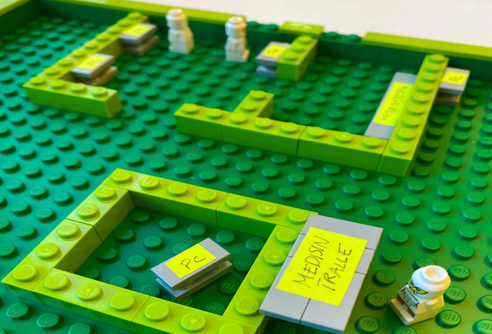
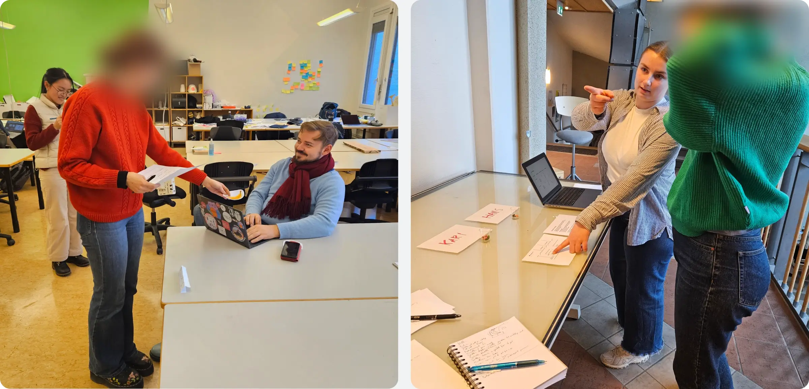
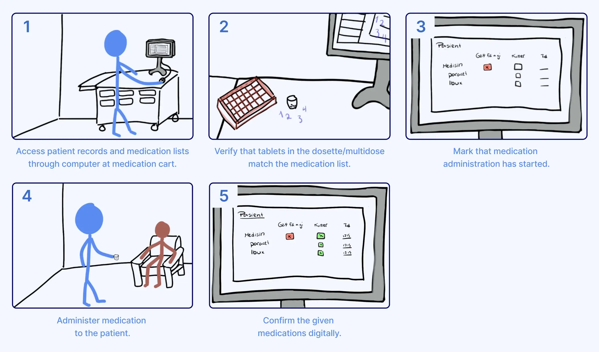

Service design
Safer medication administration for nurses

-
Role
Service designer
-
Team
5 designers
-
My contribution
Research
Concept design
User testing -
Timeline
Semester project
Background
The project began as a collaboration with the National Centre for E-health Research, originally focused on medication lists and patient records.
When we started investigating healthcare digitalisation in Norway, we quickly ran into walls: systems that don't communicate, infrastructure tied up in legislation, platforms nobody updates for fear of breaking them.
So we zoomed in, to a single nursing home, a single shift, a single workflow.
Research
Realising we were solving the wrong problem
The first weeks of our research, we were investigating software problems, expecting to find outdated medical systems with bad UX, that we could improve.
Some nursing homes have access to new and improved versions of their software, but aren't using them, afraid that an update could break something. But more importantly, we found that system incompatibility makes people manually transfer information between healthcare institutions. Using email and handwritten notes.
"Bad software isn't the main problem, we can handle that. The way medication lists get passed around is just dangerous."
— Nurse, about medication lists
A morning shift at a nursing home
One team member had a contact at a local nursing home, which gave her access to shadow a real shift. She expected to observe frustrations with software. Instead she saw handwritten notes, post-it reminders, manual counting. The single PC was in the office, so checking the journal meant leaving the medicine cart. Everyone had their own way of doing it. The workflow was the bottleneck.

Ideation
Prioritising realistic improvements
We kept a running idea bank from day one, keeping ideation low-stakes and open. The more ideas we had, the better our chances of landing on the right one.
Some directions we explored and moved away from:
- Improved paper templates. It reinforced a system they want to phase out.
- Medication administration app for home nurses. Has privacy concerns and would require months of work.
Rather than creating another overambitious student app, we asked:
What would make the existing routine less error-prone and easier to hand off between staff? One shared routine, with digital tools placed where the work actually happens.

Testing the workflow
After an early feedback session with nurses, using a Lego model of the department, we had fellow students simulate the workflow, distributing fruit instead of medicine to remove any familiarity barrier. With paper notes and the old routine, participants improvised their own methods, forgot to sign off medication, and rushed between rooms.

With simple digital tools and a shared routine, everyone followed the same structure. Nobody forgot to sign off, and there was noticeably less interruption and stress.
Several participants even paused to ask patient Kari how she was doing. In the first round, nobody did.

What we landed on
The final concept was a set of requirements applicable for most departments: a shared routine with someone responsible for keeping it consistent, digital sign-off for safer record-keeping, a PC near the medicine cart for easy lookups, among other requirements aimed at reducing uncertainty and manual counting.

Redesigned medication administration routine
The nurse we had shadowed reviewed the concept during validation and gave feedback on feasibility. We didn't reach management or secure formal sign-off, so whether anything was implemented remains unknown. Our goal had been to design something grounded and feasible with no new infrastructure or budget required.
According to our supervisor, outside actors tend to focus on large projects and new technology. But developing better working routines is a small, important area that usually falls to busy nurses to improve themselves. This project reminds me that small changes can have substantial impact too.